import pandas as pd
import pyrsm as rsm
# from utils import functions
import matplotlib.pyplot as plt
import numpy as np
import seaborn as snsIntuit Quickbooks Upgrade
- Team-lead GitHub userid: rsm-jal167 (person submitting)
- Group name: Team 4
- Team member names:
- Melody Miu
- Andrew Burda
- Jay Lee
- Juan Hernandez Guizar
## loading the data - this dataset must NOT be changed
intuit75k = pd.read_parquet("data/intuit75k.parquet")Intuit: Quickbooks upgrade
The purpose of this exercise is to gain experience modeling the response to an upsell campaign. The intuit75k.parquet file contains data on 75,000 (small) businesses that were selected randomly from the 801,821 that were sent the wave-1 mailing. The mailing contained an offer to upgrade to the latest version of the Quickbooks software.
Variable res1 denotes which of these businesses responded to the mailing by purchasing Quickbooks version 3.0 from “Intuit Direct”. Note that Intuit Direct sells products directly to its customers rather than through a retailer. Use the available data to predict which businesses that did not respond to the wave-1 mailing, are most likely to respond to the wave-2 mailing. Note that variables were added, deleted, and recoded so please ignore the variable descriptions in Exhibit 3 in the case pdf. Instead, use the variable descriptions below:
Variable description
id: Small business customer ID
zip5: 5-Digit ZIP Code (00000=unknown, 99999=international ZIPs).
zip_bins: Zip-code bins (20 approx. equal sized bins from lowest to highest zip code number)
sex: Gender Identity “Female”, “Male”, or “Unknown”
bizflag: Business Flag. Address contains a Business name (1 = yes, 0 = no or unknown).
numords: Number of orders from Intuit Direct in the previous 36 months
dollars: Total $ ordered from Intuit Direct in the previous 36 months
last: Time (in months) since last order from Intuit Direct in previous 36 months
sincepurch: Time (in months) since original (not upgrade) purchase of Quickbooks
version1: Is 1 if customer’s current Quickbooks is version 1, 0 if version 2
owntaxprod: Is 1 if customer purchased tax software, 0 otherwise pgraded from Quickbooks vs. 1 to vs. 2
res1: Response to wave 1 mailing (“Yes” if responded else “No”)
training: 70/30 split, 1 for training sample, 0 for test sample
intuit75k.head()| id | zip5 | zip_bins | sex | bizflag | numords | dollars | last | sincepurch | version1 | owntaxprod | upgraded | res1 | training | res1_yes | |
|---|---|---|---|---|---|---|---|---|---|---|---|---|---|---|---|
| 0 | 1 | 94553 | 18 | Male | 0 | 2 | 109.5 | 5 | 12 | 0 | 0 | 0 | No | 1 | 0 |
| 1 | 2 | 53190 | 10 | Unknown | 0 | 1 | 69.5 | 4 | 3 | 0 | 0 | 0 | No | 0 | 0 |
| 2 | 3 | 37091 | 8 | Male | 0 | 4 | 93.0 | 14 | 29 | 0 | 0 | 1 | No | 0 | 0 |
| 3 | 4 | 02125 | 1 | Male | 0 | 1 | 22.0 | 17 | 1 | 0 | 0 | 0 | No | 1 | 0 |
| 4 | 5 | 60201 | 11 | Male | 0 | 1 | 24.5 | 2 | 3 | 0 | 0 | 0 | No | 0 | 0 |
Based on the given hints, we decided to change the zip_bins into a categorical variable. Also, binary variables (version1, owntaxprod, upgraded) with data type as integer.
# Convert selected columns to categorical
categorical_cols = ['zip_bins', 'bizflag', 'version1', 'owntaxprod', 'upgraded']
intuit75k[categorical_cols] = intuit75k[categorical_cols].astype('category')# Group by zip_bins and calculate the mean response rate
zip_bin_response_rate = intuit75k.groupby('zip_bins')['res1_yes'].mean().reset_index()
# Plot the response rate by zip bins
plt.figure(figsize=(12, 6))
sns.barplot(x=zip_bin_response_rate['zip_bins'], y=zip_bin_response_rate['res1_yes'], palette="Blues_r")
# Formatting the plot
plt.xlabel("Zip Bins")
plt.ylabel("Response Rate")
plt.title("Response Rate by Zip Bin")
plt.xticks(rotation=45)
plt.grid(axis="y", linestyle="--", alpha=0.7)
# Show the plot
plt.show()/tmp/ipykernel_16300/6074509.py:2: FutureWarning: The default of observed=False is deprecated and will be changed to True in a future version of pandas. Pass observed=False to retain current behavior or observed=True to adopt the future default and silence this warning.
zip_bin_response_rate = intuit75k.groupby('zip_bins')['res1_yes'].mean().reset_index()
/tmp/ipykernel_16300/6074509.py:7: FutureWarning:
Passing `palette` without assigning `hue` is deprecated and will be removed in v0.14.0. Assign the `x` variable to `hue` and set `legend=False` for the same effect.
sns.barplot(x=zip_bin_response_rate['zip_bins'], y=zip_bin_response_rate['res1_yes'], palette="Blues_r")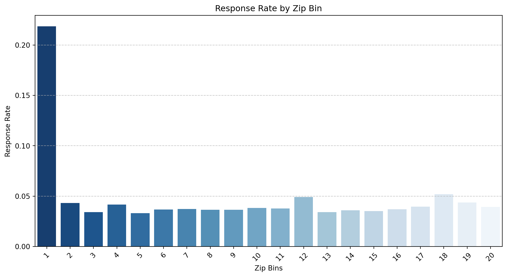
zip_bins_1 = intuit75k[intuit75k['zip_bins' ]== 1]
print(zip_bins_1) id zip5 zip_bins sex bizflag numords dollars last \
3 4 02125 1 Male 0 1 22.0 17
21 22 00801 1 Male 1 4 116.5 6
81 82 00801 1 Male 0 1 29.5 22
129 130 00801 1 Female 0 1 9.5 4
138 139 01803 1 Male 0 2 79.0 3
... ... ... ... ... ... ... ... ...
74848 74849 00000 1 Male 0 3 178.5 34
74858 74859 02138 1 Male 1 2 71.5 21
74915 74916 00911 1 Male 1 1 14.5 11
74929 74930 01907 1 Male 1 2 85.5 26
74988 74989 00801 1 Male 0 1 53.5 4
sincepurch version1 owntaxprod upgraded res1 training res1_yes
3 1 0 0 0 No 1 0
21 8 0 0 0 Yes 1 1
81 12 0 0 0 No 1 0
129 22 1 0 0 Yes 1 1
138 25 1 0 0 No 0 0
... ... ... ... ... ... ... ...
74848 23 0 0 1 No 0 0
74858 21 1 0 0 No 0 0
74915 8 0 0 0 No 1 0
74929 12 0 0 0 No 1 0
74988 16 0 0 0 No 1 0
[3757 rows x 15 columns]# Filter for ZIP code 00801
zip_00801_data = intuit75k[intuit75k['zip5'] == '00801']
# Count occurrences of each bizflag value
bizflag_counts = zip_00801_data['bizflag'].value_counts()
print(bizflag_counts)bizflag
0 1225
1 443
Name: count, dtype: int64zip_bins : Certain zip bins (e.g., Bin 1, Bin 12, Bin 18) have higher response rates. Zip bins may indicate regional factors that influence purchasing behavior like cities may be more likely to upgrade than small towns. This suggests that zip_bins is a strong predictive feature and should be included in the model.
In this graph, we can see that zip_bin 1 has the highest response rate over 0.2. Zip_bins 12 and 18 have the next highest response rate at 0.05. Looking at the zipcodes in zip_bin 1, it is noteable that 44% of the responses came from the zip code 00801. This is in the Virgin Islands, which is a US territory, not on the mainland. Although the Virgin Islands are commonly associated with businesses, the majority of transactions in this dataset (1,225) came from non-business customers bizflag = 0, compared to only 443 transactions from business customers bizflag = 1. This is somewhat unexpected given the location’s reputation for business activity
Sex: Gender is split about 60 / 30 / 10 for male / female / unknown respectively. Hinting that gender is a variable to account for. Historically there has been a larger pool of software customers that are male as opposed to other gender, aligning with our preliminary results. If male/female business owners behave differently, this might be a significant interaction with bizflag.
Bizflag: Businesses generally have more capital to spend than individual users. Thus we would expect businesses to spend more money and be more likely to upgrade or a regular cadence.
Numords: More past orders indicate a higher likelihood of responding. This may be due to higher engagement and more engagement may mean more likely to be a repeat customer.
Version1: Customers on version 1 may need an upgrade more than version 2 users as their software is more outdated. The version1 user may have a higher response rate than version 2 as it is older.
Owntaxprod: If the user has previously purchased the software, they are likely to purchase more in the future. Customers using tax products might be loyal to Intuit, leading to higher upgrade likelihood.
Sincepurch: This variable represents the time since the customer originally purchased Quickbooks. This is a key predictor of response likelihood because it reflects customer lifecycle and engagement Customers who purchased a long time ago may be due for an upgrade.Older customers may either be loyal users or satisfied non-upgraders.
Upgraded: Customers who have upgraded their software before are more likely to do so again. They might be willing to upgrade to a newer version as they are familiar with the software and may be loyal to it
Last: Customers who have purchased recently or at a regular cadence are more likely to purchase again than those who have not purchased in a while. We saw this trend with our previous case studies and thus expect it to hold true here as well (at least until disproved).
#functions.example()# show the content of another notebook
#rsm.md_notebook("sub-notebooks/question1.ipynb")# run python code from another notebook
#%run ./sub-notebooks/question1.ipynbBaseline Model
We first developed a baseline model incorporating all relevant variables to establish an initial point of reference. This provided an overview of how each factor might contribute to the outcome before making any refinements or applying more advanced techniques.
#Start by creating a model with all the variables
intuit75k_model_v1 = rsm.model.logistic(
data=intuit75k.query("training == 1"),
rvar="res1",
lev="Yes",
evar=["sex","bizflag","numords", 'last', 'sincepurch', 'owntaxprod', 'dollars', "version1", "upgraded", "zip_bins"],
)
intuit75k_model_v1.summary(vif = True)Logistic regression (GLM)
Data : Not provided
Response variable : res1
Level : Yes
Explanatory variables: sex, bizflag, numords, last, sincepurch, owntaxprod, dollars, version1, upgraded, zip_bins
Null hyp.: There is no effect of x on res1
Alt. hyp.: There is an effect of x on res1
OR OR% coefficient std.error z.value p.value
Intercept 0.181 -81.9% -1.71 0.092 -18.507 < .001 ***
sex[Male] 0.975 -2.5% -0.03 0.053 -0.472 0.637
sex[Unknown] 0.964 -3.6% -0.04 0.076 -0.485 0.628
bizflag[1] 1.036 3.6% 0.04 0.049 0.728 0.466
owntaxprod[1] 1.356 35.6% 0.30 0.103 2.959 0.003 **
version1[1] 2.113 111.3% 0.75 0.087 8.583 < .001 ***
upgraded[1] 2.616 161.6% 0.96 0.086 11.201 < .001 ***
zip_bins[2] 0.148 -85.2% -1.91 0.110 -17.296 < .001 ***
zip_bins[3] 0.118 -88.2% -2.14 0.121 -17.710 < .001 ***
zip_bins[4] 0.136 -86.4% -2.00 0.112 -17.811 < .001 ***
zip_bins[5] 0.116 -88.4% -2.15 0.120 -17.894 < .001 ***
zip_bins[6] 0.126 -87.4% -2.07 0.115 -18.043 < .001 ***
zip_bins[7] 0.121 -87.9% -2.11 0.117 -17.970 < .001 ***
zip_bins[8] 0.131 -86.9% -2.03 0.114 -17.844 < .001 ***
zip_bins[9] 0.124 -87.6% -2.09 0.117 -17.856 < .001 ***
zip_bins[10] 0.121 -87.9% -2.11 0.118 -17.919 < .001 ***
zip_bins[11] 0.128 -87.2% -2.05 0.116 -17.642 < .001 ***
zip_bins[12] 0.172 -82.8% -1.76 0.104 -16.871 < .001 ***
zip_bins[13] 0.113 -88.7% -2.18 0.121 -17.940 < .001 ***
zip_bins[14] 0.131 -86.9% -2.03 0.115 -17.718 < .001 ***
zip_bins[15] 0.118 -88.2% -2.13 0.119 -17.892 < .001 ***
zip_bins[16] 0.130 -87.0% -2.04 0.114 -17.896 < .001 ***
zip_bins[17] 0.130 -87.0% -2.04 0.114 -17.847 < .001 ***
zip_bins[18] 0.183 -81.7% -1.70 0.101 -16.745 < .001 ***
zip_bins[19] 0.143 -85.7% -1.95 0.111 -17.500 < .001 ***
zip_bins[20] 0.124 -87.6% -2.08 0.116 -17.973 < .001 ***
numords 1.259 25.9% 0.23 0.019 12.047 < .001 ***
last 0.957 -4.3% -0.04 0.002 -18.064 < .001 ***
sincepurch 1.002 0.2% 0.00 0.004 0.467 0.641
dollars 1.001 0.1% 0.00 0.000 4.009 < .001 ***
Signif. codes: 0 '***' 0.001 '**' 0.01 '*' 0.05 '.' 0.1 ' ' 1
Pseudo R-squared (McFadden): 0.114
Pseudo R-squared (McFadden adjusted): 0.111
Area under the RO Curve (AUC): 0.755
Log-likelihood: -8899.946, AIC: 17859.893, BIC: 18125.95
Chi-squared: 2289.751, df(29), p.value < 0.001
Nr obs: 52,500
Variance inflation factors:
vif Rsq
sincepurch 3.737 0.732
version1 2.972 0.664
upgraded 2.919 0.657
numords 1.558 0.358
dollars 1.527 0.345
owntaxprod 1.027 0.027
last 1.018 0.017
zip_bins 1.003 0.003
sex 1.001 0.001
bizflag 1.000 0.000intuit75k_model_v1.plot("pred")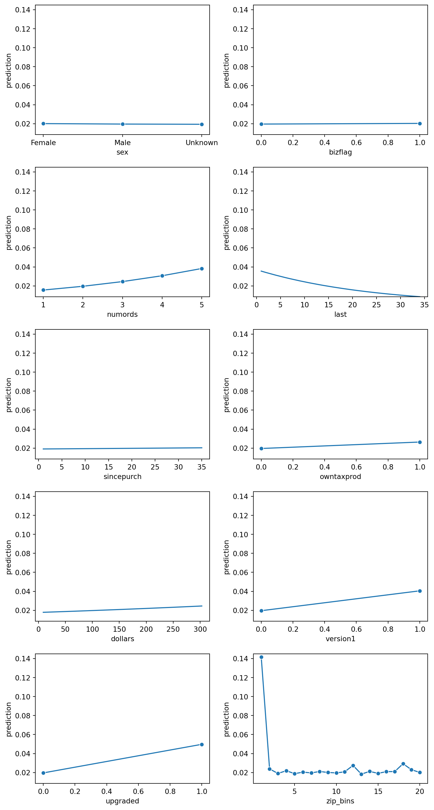
Sex: The predicted outcome remains relatively flat across Female, Male, and Unknown categories, indicating that gender does not significantly impact predictions.
Bizflag: Predictions appear nearly identical between business (1) and non-business (0) customers, suggesting that business status has minimal influence on the outcome. Regardless of business status it has equal predicting power. (.02)
Number of Orders (“numords”): There is a positive trend—higher numbers of orders correspond with increased predictions, implying that order frequency is an important factor.
Recency of Last Purchase (“last”): Predictions decrease as the time since the last purchase increases, indicating that recent purchasers are more likely to exhibit the predicted behavior.
Months Since First Purchase (“sincepurch”): Predictions remain mostly flat, suggesting that the time since the first purchase does not have a significant impact.
Owns Tax Product (“owntaxprod”): There is a slight upward trend, implying that customers who own a tax product are marginally more likely to exhibit the predicted behavior.
dollars: There is a slight upward trend, indicating that as the amount spent increases, the prediction value also increases. However, the effect appears minimal, suggesting that while spending more may slightly impact the outcome, it is not a strong predictor.
Version1: Predictions show a slight upward trend, meaning customers using this version of the product have a marginally higher likelihood of the predicted outcome.
Upgraded: Predictions increase more noticeably when a customer has upgraded, suggesting that upgrades are a strong indicator of the predicted behavior.
Zip Bins: (Bottom-left): There is a sharp drop from the first zip bin, which has a significantly higher predicted probability, followed by relatively stable but fluctuating values across the remaining bins. This suggests that certain zip code groups have a much stronger influence on predictions than others.
intuit75k_model_v1.plot('corr')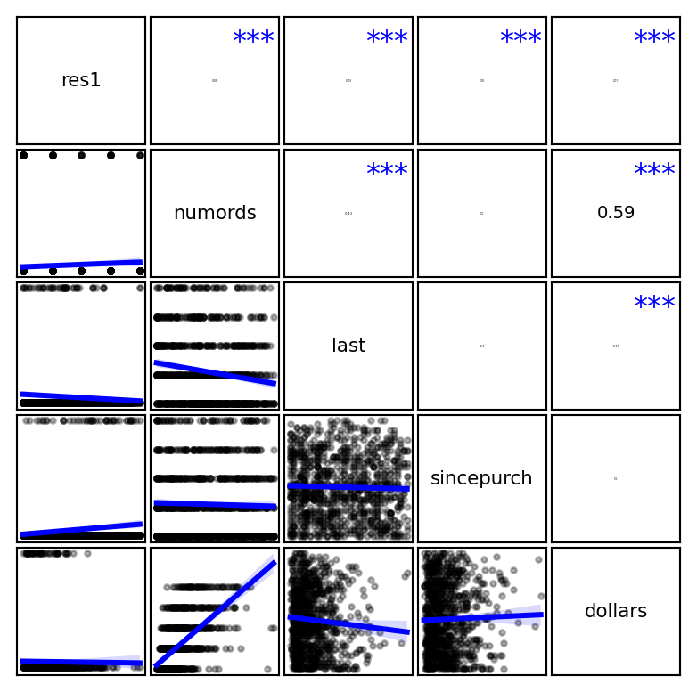
This correlation plot visualizes the relationships between different variables using scatter plots and correlation coefficients. The blue trend lines indicate general relationships between variables, while correlation values (e.g., 0.59) highlight stronger associations. Notable observations include:
numords and dollars show a positive relationship, meaning customers who place more orders tend to spend more. last and sincepurch have a negative trend, indicating that as time since the last purchase increases, recency of purchase decreases (which makes intuitive sense). Some variables, like res1 do not appear to have strong linear relationships with others. We should also not that since we have categorical variables those don’t show up in the plot.
All VIF values are below 5, with most being close to 1, suggesting low correlation among independent variables. The highest VIF value is 3.737 for sincepurch, which is still within an acceptable range.
intuit75k_model_v1.plot("vimp")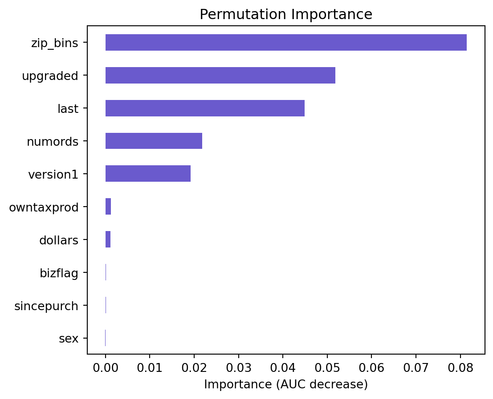
This permutation importance plot shows how much each variable contributes to the model’s predictive performance. Zip bins have the highest importance, meaning geographic location plays the most significant role. Upgraded, last purchase recency , and number of orders are also key factors. Meanwhile, dollars, owntaxprod, bizflag, sincepurch, and sex have little to no impact on predictions
Testing different model without dollar, bizflag, sincepurch, sex as they are not significant. Also, permutation importance shows that those variables are not important.
intuit75k_model_v2 = rsm.model.logistic(
data=intuit75k.query("training == 1"),
rvar="res1",
lev="Yes",
evar=["numords", 'last', 'owntaxprod', "version1", "upgraded", "zip_bins"],
)
intuit75k_model_v2.summary()Logistic regression (GLM)
Data : Not provided
Response variable : res1
Level : Yes
Explanatory variables: numords, last, owntaxprod, version1, upgraded, zip_bins
Null hyp.: There is no effect of x on res1
Alt. hyp.: There is an effect of x on res1
OR OR% coefficient std.error z.value p.value
Intercept 0.184 -81.6% -1.69 0.075 -22.580 < .001 ***
owntaxprod[1] 1.364 36.4% 0.31 0.103 3.023 0.003 **
version1[1] 2.182 118.2% 0.78 0.053 14.815 < .001 ***
upgraded[1] 2.697 169.7% 0.99 0.051 19.575 < .001 ***
zip_bins[2] 0.148 -85.2% -1.91 0.110 -17.296 < .001 ***
zip_bins[3] 0.118 -88.2% -2.14 0.121 -17.679 < .001 ***
zip_bins[4] 0.137 -86.3% -1.99 0.112 -17.766 < .001 ***
zip_bins[5] 0.117 -88.3% -2.14 0.120 -17.835 < .001 ***
zip_bins[6] 0.127 -87.3% -2.06 0.115 -18.008 < .001 ***
zip_bins[7] 0.122 -87.8% -2.10 0.117 -17.930 < .001 ***
zip_bins[8] 0.131 -86.9% -2.03 0.114 -17.850 < .001 ***
zip_bins[9] 0.125 -87.5% -2.08 0.117 -17.829 < .001 ***
zip_bins[10] 0.122 -87.8% -2.11 0.118 -17.899 < .001 ***
zip_bins[11] 0.129 -87.1% -2.05 0.116 -17.612 < .001 ***
zip_bins[12] 0.172 -82.8% -1.76 0.104 -16.844 < .001 ***
zip_bins[13] 0.114 -88.6% -2.17 0.121 -17.901 < .001 ***
zip_bins[14] 0.132 -86.8% -2.03 0.115 -17.702 < .001 ***
zip_bins[15] 0.119 -88.1% -2.13 0.119 -17.868 < .001 ***
zip_bins[16] 0.131 -86.9% -2.04 0.114 -17.850 < .001 ***
zip_bins[17] 0.131 -86.9% -2.04 0.114 -17.832 < .001 ***
zip_bins[18] 0.184 -81.6% -1.69 0.101 -16.697 < .001 ***
zip_bins[19] 0.143 -85.7% -1.94 0.111 -17.479 < .001 ***
zip_bins[20] 0.125 -87.5% -2.08 0.116 -17.938 < .001 ***
numords 1.314 31.4% 0.27 0.016 17.454 < .001 ***
last 0.957 -4.3% -0.04 0.002 -18.129 < .001 ***
Signif. codes: 0 '***' 0.001 '**' 0.01 '*' 0.05 '.' 0.1 ' ' 1
Pseudo R-squared (McFadden): 0.113
Pseudo R-squared (McFadden adjusted): 0.111
Area under the RO Curve (AUC): 0.755
Log-likelihood: -8908.21, AIC: 17866.421, BIC: 18088.135
Chi-squared: 2273.223, df(24), p.value < 0.001
Nr obs: 52,500After taking out the variables dollar, bizflag, sincepurch, sex we noticed that the R-squared value decreased an insignificant amount.
(0.114 -> 0.113)
intuit75k_model_v2.plot("pred")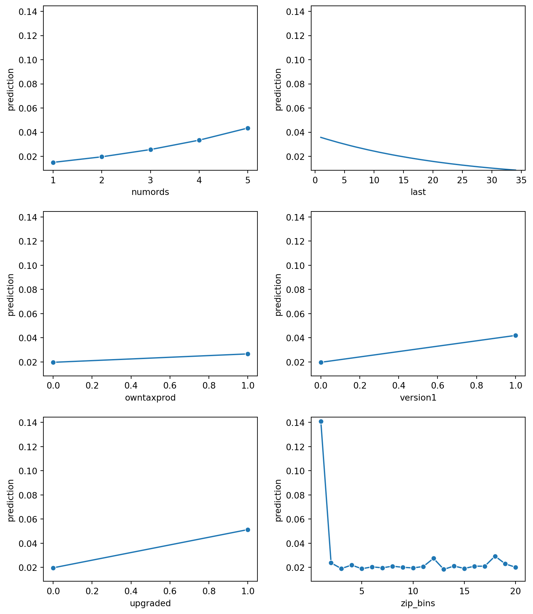
intuit75k_model_v2.plot("vimp") 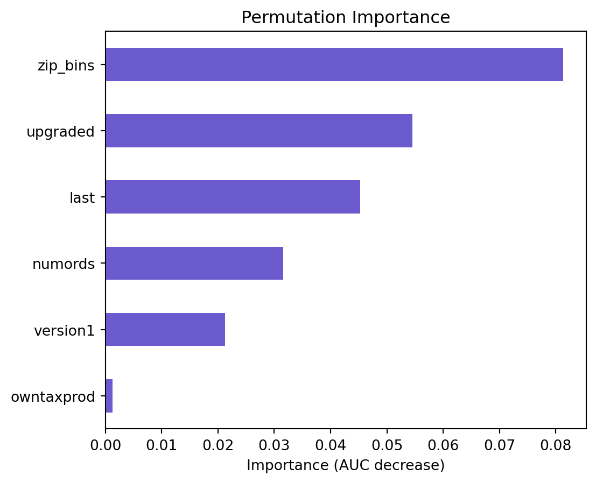
We want to see if we can improve the model by dropping the owntaxprod since it is not important in the model.
intuit75k_model_v3 = rsm.model.logistic(
data=intuit75k.query("training == 1"),
rvar="res1",
lev="Yes",
evar=["numords", 'last', "version1", "upgraded", "zip_bins"],
)
intuit75k_model_v3.summary()Logistic regression (GLM)
Data : Not provided
Response variable : res1
Level : Yes
Explanatory variables: numords, last, version1, upgraded, zip_bins
Null hyp.: There is no effect of x on res1
Alt. hyp.: There is an effect of x on res1
OR OR% coefficient std.error z.value p.value
Intercept 0.184 -81.6% -1.69 0.075 -22.578 < .001 ***
version1[1] 2.157 115.7% 0.77 0.052 14.645 < .001 ***
upgraded[1] 2.731 173.1% 1.00 0.050 19.902 < .001 ***
zip_bins[2] 0.148 -85.2% -1.91 0.110 -17.315 < .001 ***
zip_bins[3] 0.118 -88.2% -2.14 0.121 -17.691 < .001 ***
zip_bins[4] 0.137 -86.3% -1.99 0.112 -17.766 < .001 ***
zip_bins[5] 0.117 -88.3% -2.14 0.120 -17.849 < .001 ***
zip_bins[6] 0.127 -87.3% -2.06 0.114 -18.013 < .001 ***
zip_bins[7] 0.123 -87.7% -2.10 0.117 -17.910 < .001 ***
zip_bins[8] 0.131 -86.9% -2.03 0.114 -17.850 < .001 ***
zip_bins[9] 0.125 -87.5% -2.08 0.117 -17.827 < .001 ***
zip_bins[10] 0.122 -87.8% -2.10 0.118 -17.883 < .001 ***
zip_bins[11] 0.129 -87.1% -2.05 0.116 -17.592 < .001 ***
zip_bins[12] 0.172 -82.8% -1.76 0.104 -16.862 < .001 ***
zip_bins[13] 0.114 -88.6% -2.17 0.121 -17.909 < .001 ***
zip_bins[14] 0.132 -86.8% -2.02 0.115 -17.675 < .001 ***
zip_bins[15] 0.119 -88.1% -2.13 0.119 -17.873 < .001 ***
zip_bins[16] 0.131 -86.9% -2.03 0.114 -17.845 < .001 ***
zip_bins[17] 0.131 -86.9% -2.03 0.114 -17.824 < .001 ***
zip_bins[18] 0.184 -81.6% -1.69 0.101 -16.694 < .001 ***
zip_bins[19] 0.143 -85.7% -1.94 0.111 -17.474 < .001 ***
zip_bins[20] 0.125 -87.5% -2.08 0.116 -17.934 < .001 ***
numords 1.320 32.0% 0.28 0.016 17.875 < .001 ***
last 0.957 -4.3% -0.04 0.002 -18.137 < .001 ***
Signif. codes: 0 '***' 0.001 '**' 0.01 '*' 0.05 '.' 0.1 ' ' 1
Pseudo R-squared (McFadden): 0.113
Pseudo R-squared (McFadden adjusted): 0.11
Area under the RO Curve (AUC): 0.754
Log-likelihood: -8912.494, AIC: 17872.989, BIC: 18085.835
Chi-squared: 2264.655, df(23), p.value < 0.001
Nr obs: 52,500As you can see, dropping owntaxprod does not make a significant difference.
intuit75k_model_v3.plot("pred")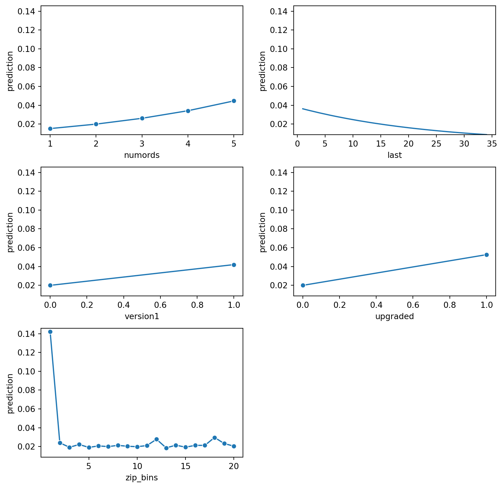
intuit75k_model_v3.plot("vimp")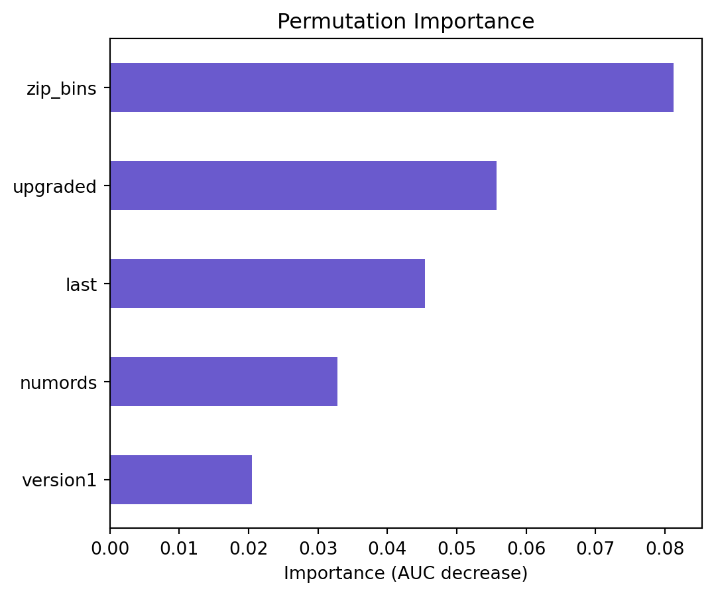
Checking correlation between variables to see if we can remove any more variables.
intuit75k_model_v3.plot("corr")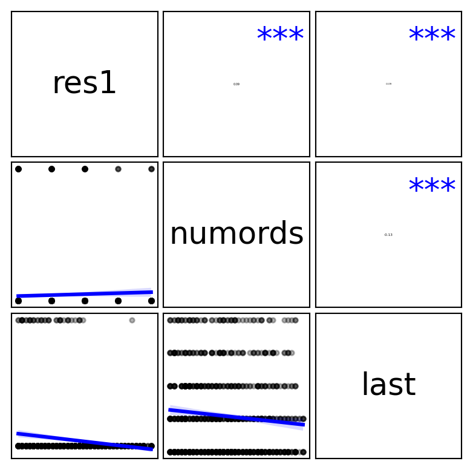
intuit75k_model_v3.summary(main=False, fit=False, vif=True)
Variance inflation factors:
vif Rsq
upgraded 1.077 0.071
version1 1.076 0.071
last 1.018 0.017
numords 1.018 0.017
zip_bins 1.001 0.001Here we are going to test each variable
intuit75k_model_v1.summary(main = False, vif = True, test = "sex")
Pseudo R-squared (McFadden): 0.114
Pseudo R-squared (McFadden adjusted): 0.111
Area under the RO Curve (AUC): 0.755
Log-likelihood: -8899.946, AIC: 17859.893, BIC: 18125.95
Chi-squared: 2289.751, df(29), p.value < 0.001
Nr obs: 52,500
Variance inflation factors:
vif Rsq
sincepurch 3.737 0.732
version1 2.972 0.664
upgraded 2.919 0.657
numords 1.558 0.358
dollars 1.527 0.345
owntaxprod 1.027 0.027
last 1.018 0.017
zip_bins 1.003 0.003
sex 1.001 0.001
bizflag 1.000 0.000
Model 1: res1 ~ bizflag + numords + last + sincepurch + owntaxprod + dollars + version1 + upgraded + zip_bins
Model 2: res1 ~ sex + bizflag + numords + last + sincepurch + owntaxprod + dollars + version1 + upgraded + zip_bins
Pseudo R-squared, Model 1 vs 2: 0.114 vs 0.114
Chi-squared: 0.298 df (2), p.value 0.862Neither the R-squared or AUC changed, thus we conclude that sex isn’t significant as a variable.
intuit75k_model_v1.summary(main = False, vif = True, test = "numords")
Pseudo R-squared (McFadden): 0.114
Pseudo R-squared (McFadden adjusted): 0.111
Area under the RO Curve (AUC): 0.755
Log-likelihood: -8899.946, AIC: 17859.893, BIC: 18125.95
Chi-squared: 2289.751, df(29), p.value < 0.001
Nr obs: 52,500
Variance inflation factors:
vif Rsq
sincepurch 3.737 0.732
version1 2.972 0.664
upgraded 2.919 0.657
numords 1.558 0.358
dollars 1.527 0.345
owntaxprod 1.027 0.027
last 1.018 0.017
zip_bins 1.003 0.003
sex 1.001 0.001
bizflag 1.000 0.000
Model 1: res1 ~ sex + bizflag + last + sincepurch + owntaxprod + dollars + version1 + upgraded + zip_bins
Model 2: res1 ~ sex + bizflag + numords + last + sincepurch + owntaxprod + dollars + version1 + upgraded + zip_bins
Pseudo R-squared, Model 1 vs 2: 0.107 vs 0.114
Chi-squared: 141.307 df (1), p.value < .001R-squared changed a bit, thus we conclude that numords should be included in the model.
intuit75k_model_v1.summary(main = False, vif = True, test = "version1")
Pseudo R-squared (McFadden): 0.114
Pseudo R-squared (McFadden adjusted): 0.111
Area under the RO Curve (AUC): 0.755
Log-likelihood: -8899.946, AIC: 17859.893, BIC: 18125.95
Chi-squared: 2289.751, df(29), p.value < 0.001
Nr obs: 52,500
Variance inflation factors:
vif Rsq
sincepurch 3.737 0.732
version1 2.972 0.664
upgraded 2.919 0.657
numords 1.558 0.358
dollars 1.527 0.345
owntaxprod 1.027 0.027
last 1.018 0.017
zip_bins 1.003 0.003
sex 1.001 0.001
bizflag 1.000 0.000
Model 1: res1 ~ sex + bizflag + numords + last + sincepurch + owntaxprod + dollars + upgraded + zip_bins
Model 2: res1 ~ sex + bizflag + numords + last + sincepurch + owntaxprod + dollars + version1 + upgraded + zip_bins
Pseudo R-squared, Model 1 vs 2: 0.110 vs 0.114
Chi-squared: 73.215 df (1), p.value < .001R-squared changed a bit, thus we conclude that version1 should be included in the model.
intuit75k_model_v1.summary(main = False, vif = True, test = "dollars")
Pseudo R-squared (McFadden): 0.114
Pseudo R-squared (McFadden adjusted): 0.111
Area under the RO Curve (AUC): 0.755
Log-likelihood: -8899.946, AIC: 17859.893, BIC: 18125.95
Chi-squared: 2289.751, df(29), p.value < 0.001
Nr obs: 52,500
Variance inflation factors:
vif Rsq
sincepurch 3.737 0.732
version1 2.972 0.664
upgraded 2.919 0.657
numords 1.558 0.358
dollars 1.527 0.345
owntaxprod 1.027 0.027
last 1.018 0.017
zip_bins 1.003 0.003
sex 1.001 0.001
bizflag 1.000 0.000
Model 1: res1 ~ sex + bizflag + numords + last + sincepurch + owntaxprod + version1 + upgraded + zip_bins
Model 2: res1 ~ sex + bizflag + numords + last + sincepurch + owntaxprod + dollars + version1 + upgraded + zip_bins
Pseudo R-squared, Model 1 vs 2: 0.113 vs 0.114
Chi-squared: 15.391 df (1), p.value < .001Neither the R-squared or AUC changed, thus we conclude that dollars isn’t significant as a variable.
intuit75k_model_v1.summary(main = False, vif = True, test = "bizflag")
Pseudo R-squared (McFadden): 0.114
Pseudo R-squared (McFadden adjusted): 0.111
Area under the RO Curve (AUC): 0.755
Log-likelihood: -8899.946, AIC: 17859.893, BIC: 18125.95
Chi-squared: 2289.751, df(29), p.value < 0.001
Nr obs: 52,500
Variance inflation factors:
vif Rsq
sincepurch 3.737 0.732
version1 2.972 0.664
upgraded 2.919 0.657
numords 1.558 0.358
dollars 1.527 0.345
owntaxprod 1.027 0.027
last 1.018 0.017
zip_bins 1.003 0.003
sex 1.001 0.001
bizflag 1.000 0.000
Model 1: res1 ~ sex + numords + last + sincepurch + owntaxprod + dollars + version1 + upgraded + zip_bins
Model 2: res1 ~ sex + bizflag + numords + last + sincepurch + owntaxprod + dollars + version1 + upgraded + zip_bins
Pseudo R-squared, Model 1 vs 2: 0.114 vs 0.114
Chi-squared: 0.528 df (1), p.value 0.468Neither the R-squared or AUC changed, thus we conclude that bizflag isn’t significant as a variable. and omitted the variable
intuit75k_model_v1.summary(main = False,vif = True, test = "last")
Pseudo R-squared (McFadden): 0.114
Pseudo R-squared (McFadden adjusted): 0.111
Area under the RO Curve (AUC): 0.755
Log-likelihood: -8899.946, AIC: 17859.893, BIC: 18125.95
Chi-squared: 2289.751, df(29), p.value < 0.001
Nr obs: 52,500
Variance inflation factors:
vif Rsq
sincepurch 3.737 0.732
version1 2.972 0.664
upgraded 2.919 0.657
numords 1.558 0.358
dollars 1.527 0.345
owntaxprod 1.027 0.027
last 1.018 0.017
zip_bins 1.003 0.003
sex 1.001 0.001
bizflag 1.000 0.000
Model 1: res1 ~ sex + bizflag + numords + sincepurch + owntaxprod + dollars + version1 + upgraded + zip_bins
Model 2: res1 ~ sex + bizflag + numords + last + sincepurch + owntaxprod + dollars + version1 + upgraded + zip_bins
Pseudo R-squared, Model 1 vs 2: 0.097 vs 0.114
Chi-squared: 350.081 df (1), p.value < .001R-squared changed significantly, thus we conclude that last is significant as a variable.
Including bizflag in the model as opposed to leaving it out does not impact the model either way. It is indifferent. With that being said, we will leave it out of the model.
Even though sincepurch is not significant we decided to include it. The more time since purchase means someone will have old software and may be looking to upgrade
We noticed that the odds ratio does not vary between our base model and final model, thus showing little to no interaction.
Interactions: Why It Might Be Important
- bizflag × zip_bin: Some geographic areas may have higher business density, affecting response rates.
- sex × bizflag: Male and female business owners may behave differently in upgrading software.
- version1 × upgraded: If someone upgraded from v1 to v2, they may be more likely to upgrade to v3.
- numords × dollars: Businesses with many purchases and high spending may be the best upgrade targets.
- sincepurch × last: Customers who bought software long ago but recently engaged may be at peak upgrade potential.
final_model = rsm.model.logistic(
data = intuit75k[(intuit75k.training == 1)],
rvar = "res1",
lev = "Yes",
evar = ["numords", "version1", "upgraded", "last", "sincepurch", "zip_bins"],
)
final_model.summary(vif = True)Logistic regression (GLM)
Data : Not provided
Response variable : res1
Level : Yes
Explanatory variables: numords, version1, upgraded, last, sincepurch, zip_bins
Null hyp.: There is no effect of x on res1
Alt. hyp.: There is an effect of x on res1
OR OR% coefficient std.error z.value p.value
Intercept 0.181 -81.9% -1.71 0.082 -20.864 < .001 ***
version1[1] 2.081 108.1% 0.73 0.087 8.426 < .001 ***
upgraded[1] 2.636 163.6% 0.97 0.086 11.310 < .001 ***
zip_bins[2] 0.148 -85.2% -1.91 0.110 -17.314 < .001 ***
zip_bins[3] 0.118 -88.2% -2.14 0.121 -17.689 < .001 ***
zip_bins[4] 0.137 -86.3% -1.99 0.112 -17.766 < .001 ***
zip_bins[5] 0.117 -88.3% -2.14 0.120 -17.848 < .001 ***
zip_bins[6] 0.127 -87.3% -2.06 0.114 -18.015 < .001 ***
zip_bins[7] 0.123 -87.7% -2.10 0.117 -17.913 < .001 ***
zip_bins[8] 0.131 -86.9% -2.03 0.114 -17.846 < .001 ***
zip_bins[9] 0.125 -87.5% -2.08 0.117 -17.828 < .001 ***
zip_bins[10] 0.122 -87.8% -2.10 0.118 -17.883 < .001 ***
zip_bins[11] 0.129 -87.1% -2.05 0.116 -17.593 < .001 ***
zip_bins[12] 0.172 -82.8% -1.76 0.104 -16.861 < .001 ***
zip_bins[13] 0.114 -88.6% -2.17 0.121 -17.907 < .001 ***
zip_bins[14] 0.132 -86.8% -2.02 0.115 -17.676 < .001 ***
zip_bins[15] 0.119 -88.1% -2.13 0.119 -17.875 < .001 ***
zip_bins[16] 0.131 -86.9% -2.03 0.114 -17.844 < .001 ***
zip_bins[17] 0.131 -86.9% -2.03 0.114 -17.821 < .001 ***
zip_bins[18] 0.184 -81.6% -1.69 0.101 -16.698 < .001 ***
zip_bins[19] 0.143 -85.7% -1.94 0.111 -17.474 < .001 ***
zip_bins[20] 0.125 -87.5% -2.08 0.116 -17.933 < .001 ***
numords 1.319 31.9% 0.28 0.016 17.871 < .001 ***
last 0.957 -4.3% -0.04 0.002 -18.137 < .001 ***
sincepurch 1.002 0.2% 0.00 0.004 0.514 0.607
Signif. codes: 0 '***' 0.001 '**' 0.01 '*' 0.05 '.' 0.1 ' ' 1
Pseudo R-squared (McFadden): 0.113
Pseudo R-squared (McFadden adjusted): 0.11
Area under the RO Curve (AUC): 0.754
Log-likelihood: -8912.362, AIC: 17874.725, BIC: 18096.439
Chi-squared: 2264.919, df(24), p.value < 0.001
Nr obs: 52,500
Variance inflation factors:
vif Rsq
sincepurch 3.737 0.732
version1 2.968 0.663
upgraded 2.913 0.657
last 1.018 0.017
numords 1.018 0.017
zip_bins 1.001 0.001final_model.plot("pred")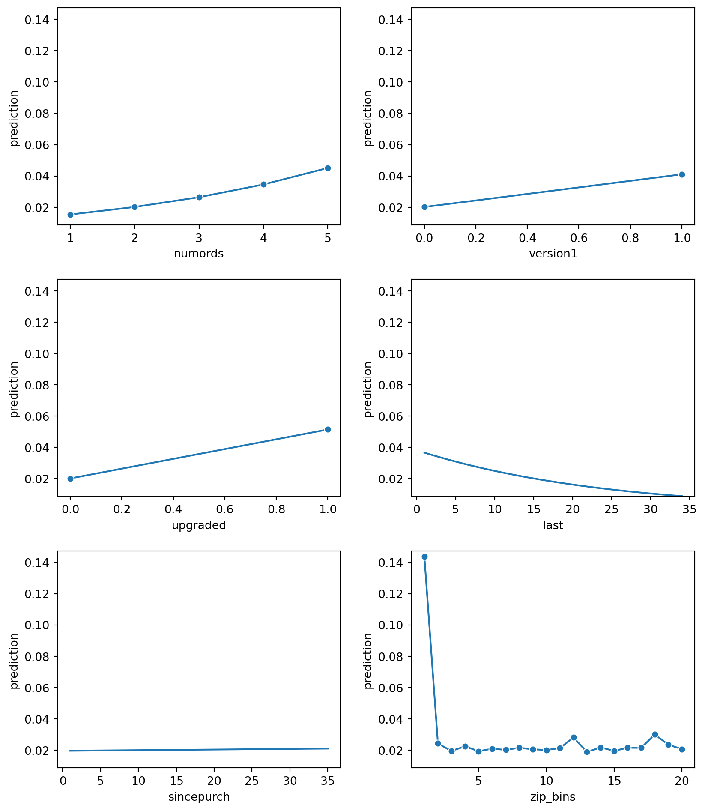
final_model.plot("vimp")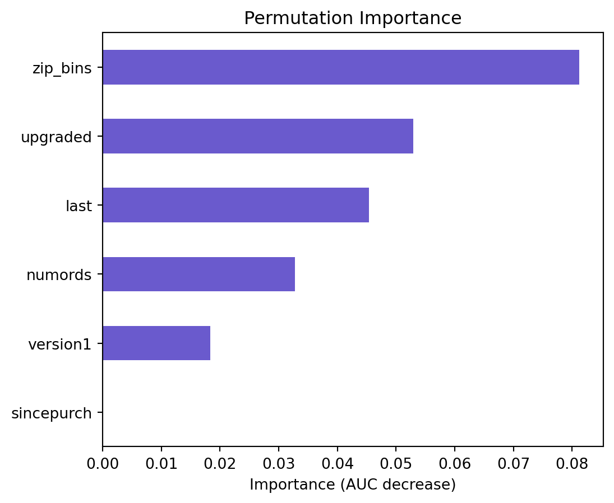
Now that we have our model, let’s predict the test data and evaluate the model.
intuit75k["pred_logit"] = final_model.predict(data=intuit75k)["prediction"]
intuit75k| id | zip5 | zip_bins | sex | bizflag | numords | dollars | last | sincepurch | version1 | owntaxprod | upgraded | res1 | training | res1_yes | pred_logit | |
|---|---|---|---|---|---|---|---|---|---|---|---|---|---|---|---|---|
| 0 | 1 | 94553 | 18 | Male | 0 | 2 | 109.5 | 5 | 12 | 0 | 0 | 0 | No | 1 | 0 | 0.045501 |
| 1 | 2 | 53190 | 10 | Unknown | 0 | 1 | 69.5 | 4 | 3 | 0 | 0 | 0 | No | 0 | 0 | 0.023960 |
| 2 | 3 | 37091 | 8 | Male | 0 | 4 | 93.0 | 14 | 29 | 0 | 0 | 1 | No | 0 | 0 | 0.097769 |
| 3 | 4 | 02125 | 1 | Male | 0 | 1 | 22.0 | 17 | 1 | 0 | 0 | 0 | No | 1 | 0 | 0.101751 |
| 4 | 5 | 60201 | 11 | Male | 0 | 1 | 24.5 | 2 | 3 | 0 | 0 | 0 | No | 0 | 0 | 0.027635 |
| ... | ... | ... | ... | ... | ... | ... | ... | ... | ... | ... | ... | ... | ... | ... | ... | ... |
| 74995 | 74996 | 28205 | 6 | Male | 1 | 4 | 211.5 | 5 | 15 | 0 | 0 | 0 | Yes | 1 | 1 | 0.054509 |
| 74996 | 74997 | 94806 | 18 | Male | 0 | 1 | 4.5 | 35 | 34 | 1 | 0 | 0 | No | 1 | 0 | 0.020635 |
| 74997 | 74998 | 72958 | 13 | Female | 1 | 1 | 54.5 | 4 | 19 | 1 | 0 | 0 | No | 1 | 0 | 0.047038 |
| 74998 | 74999 | 29464 | 6 | Male | 0 | 1 | 69.5 | 20 | 27 | 0 | 0 | 1 | No | 1 | 0 | 0.033899 |
| 74999 | 75000 | 32791 | 7 | Male | 0 | 1 | 74.5 | 7 | 28 | 0 | 0 | 1 | No | 0 | 0 | 0.056582 |
75000 rows × 16 columns
cost = 1.41
margin = 60.0
breakeven = cost / margin
breakeven0.0235Only target those who are above the breakeven
intuit75k["message_logit"] = intuit75k['pred_logit'] > breakevenintuit75k.message_logit.value_counts()message_logit
True 47742
False 27258
Name: count, dtype: int64intuit75k_test = intuit75k[(intuit75k.training == 0)]
intuit75k_test| id | zip5 | zip_bins | sex | bizflag | numords | dollars | last | sincepurch | version1 | owntaxprod | upgraded | res1 | training | res1_yes | pred_logit | message_logit | |
|---|---|---|---|---|---|---|---|---|---|---|---|---|---|---|---|---|---|
| 1 | 2 | 53190 | 10 | Unknown | 0 | 1 | 69.5 | 4 | 3 | 0 | 0 | 0 | No | 0 | 0 | 0.023960 | True |
| 2 | 3 | 37091 | 8 | Male | 0 | 4 | 93.0 | 14 | 29 | 0 | 0 | 1 | No | 0 | 0 | 0.097769 | True |
| 4 | 5 | 60201 | 11 | Male | 0 | 1 | 24.5 | 2 | 3 | 0 | 0 | 0 | No | 0 | 0 | 0.027635 | True |
| 6 | 7 | 22980 | 5 | Male | 0 | 1 | 49.5 | 13 | 36 | 1 | 0 | 0 | No | 0 | 0 | 0.034151 | True |
| 8 | 9 | 34950 | 8 | Male | 0 | 1 | 44.5 | 15 | 4 | 0 | 0 | 0 | No | 0 | 0 | 0.016013 | False |
| ... | ... | ... | ... | ... | ... | ... | ... | ... | ... | ... | ... | ... | ... | ... | ... | ... | ... |
| 74981 | 74982 | 90803 | 16 | Male | 1 | 1 | 129.5 | 12 | 16 | 0 | 0 | 0 | No | 0 | 0 | 0.018676 | False |
| 74982 | 74983 | 71446 | 12 | Male | 0 | 2 | 22.0 | 25 | 1 | 0 | 0 | 0 | No | 0 | 0 | 0.017766 | False |
| 74987 | 74988 | 80501 | 15 | Female | 0 | 4 | 94.5 | 7 | 23 | 1 | 0 | 0 | No | 0 | 0 | 0.094453 | True |
| 74993 | 74994 | 40223 | 8 | Female | 0 | 5 | 170.5 | 9 | 20 | 0 | 0 | 1 | Yes | 0 | 1 | 0.148813 | True |
| 74999 | 75000 | 32791 | 7 | Male | 0 | 1 | 74.5 | 7 | 28 | 0 | 0 | 1 | No | 0 | 0 | 0.056582 | True |
22500 rows × 17 columns
intuit75k_test.shape[0]22500targeted_id = intuit75k_test[(intuit75k_test.message_logit == True)]
targeted_id| id | zip5 | zip_bins | sex | bizflag | numords | dollars | last | sincepurch | version1 | owntaxprod | upgraded | res1 | training | res1_yes | pred_logit | message_logit | |
|---|---|---|---|---|---|---|---|---|---|---|---|---|---|---|---|---|---|
| 1 | 2 | 53190 | 10 | Unknown | 0 | 1 | 69.5 | 4 | 3 | 0 | 0 | 0 | No | 0 | 0 | 0.023960 | True |
| 2 | 3 | 37091 | 8 | Male | 0 | 4 | 93.0 | 14 | 29 | 0 | 0 | 1 | No | 0 | 0 | 0.097769 | True |
| 4 | 5 | 60201 | 11 | Male | 0 | 1 | 24.5 | 2 | 3 | 0 | 0 | 0 | No | 0 | 0 | 0.027635 | True |
| 6 | 7 | 22980 | 5 | Male | 0 | 1 | 49.5 | 13 | 36 | 1 | 0 | 0 | No | 0 | 0 | 0.034151 | True |
| 11 | 12 | 91942 | 17 | Male | 1 | 5 | 79.0 | 5 | 21 | 0 | 0 | 1 | Yes | 0 | 1 | 0.172819 | True |
| ... | ... | ... | ... | ... | ... | ... | ... | ... | ... | ... | ... | ... | ... | ... | ... | ... | ... |
| 74976 | 74977 | 92667 | 17 | Female | 1 | 2 | 185.5 | 4 | 11 | 0 | 0 | 0 | No | 0 | 0 | 0.034121 | True |
| 74979 | 74980 | 98022 | 20 | Male | 1 | 1 | 24.5 | 3 | 31 | 1 | 0 | 0 | No | 0 | 0 | 0.054895 | True |
| 74987 | 74988 | 80501 | 15 | Female | 0 | 4 | 94.5 | 7 | 23 | 1 | 0 | 0 | No | 0 | 0 | 0.094453 | True |
| 74993 | 74994 | 40223 | 8 | Female | 0 | 5 | 170.5 | 9 | 20 | 0 | 0 | 1 | Yes | 0 | 1 | 0.148813 | True |
| 74999 | 75000 | 32791 | 7 | Male | 0 | 1 | 74.5 | 7 | 28 | 0 | 0 | 1 | No | 0 | 0 | 0.056582 | True |
14403 rows × 17 columns
intuit75k_test.res1.value_counts()res1
No 21397
Yes 1103
Name: count, dtype: int64revenue = 1103 * 60
cost = 1103 * 1.41
profit = revenue - cost
ROME = profit / costConfusion matrix:
True_Positive = ((intuit75k_test["res1"] == "Yes") & (intuit75k_test["message_logit"] == True)).sum()
False_Positive = ((intuit75k_test["res1"] == "No") & (intuit75k_test["message_logit"] == True)).sum()
True_Negative = ((intuit75k_test["res1"] == "No") & (intuit75k_test["message_logit"] == False)).sum()
False_Negative = ((intuit75k_test["res1"] == "Yes") & (intuit75k_test["message_logit"] == False)).sum()
cm_logit = pd.DataFrame(
{
"label": ["True_Positive", "False_Positive", "True_Negative", "False_Negative"],
"nr": [True_Positive, False_Positive, True_Negative, False_Negative] # TP, FP, TN, and FN values in that order
}
)
cm_logit| label | nr | |
|---|---|---|
| 0 | True_Positive | 976 |
| 1 | False_Positive | 13427 |
| 2 | True_Negative | 7970 |
| 3 | False_Negative | 127 |
accuracy_logit = (True_Positive + True_Negative) / (True_Positive + True_Negative + False_Positive + False_Negative) # float
print(accuracy_logit)0.3976cm_logit| label | nr | |
|---|---|---|
| 0 | True_Positive | 976 |
| 1 | False_Positive | 13427 |
| 2 | True_Negative | 7970 |
| 3 | False_Negative | 127 |
We decided not to move forward with Model 1 or Model 2 despite those models having a slightly higher accuracy. We feel that our final model best portrays consumer behavior.
801821 - 38487763334rate = intuit75k_test.res1_yes.mean()
rate0.049022222222222224# logit
exp_click_log = 763334 * (976/22500)
#exp_signup_log = exp_click_log * rate
exp_rev_log = exp_click_log * 60
marketing_cost_log = ((763334 * (976/22500)) + (763334 * (13427/22500))) * 1.41
profit_log = exp_rev_log - marketing_cost_log
ROME_log = profit_log / marketing_cost_log
print(exp_click_log)
print(exp_rev_log)
print(marketing_cost_log)
print(f"Profit: {profit_log}")
print(f"ROME: {ROME_log}")33111.732622222225
1986703.9573333336
688976.108392
Profit: 1297727.8489413336
ROME: 1.883560014831426# spam
ctr_all = intuit75k_test["res1_yes"].mean()
exp_click_spam = 763334 * ctr_all
#exp_signup_log = exp_click_log * rate
exp_rev_spam = exp_click_spam * 60
marketing_cost_spam = 763334 * 1.41
profit_spam = exp_rev_spam - marketing_cost_spam
ROME_spam = profit_spam / marketing_cost_spam
print(exp_click_spam)
print(exp_rev_spam)
print(marketing_cost_spam)
print(f"Profit: {profit_spam}")
print(f"ROME: {ROME_spam}")37420.32897777778
2245219.738666667
1076300.94
Profit: 1168918.7986666672
ROME: 1.0860520094562653mod_perf_profit = pd.DataFrame(
{
"model": [
"logit",
"spam",
],
"profit": [profit_log,profit_spam],
}
)mod_perf_rome = pd.DataFrame(
{
"model": [
"logit",
"spam",
],
"ROME": [ROME_log,ROME_spam],
}
)# Set 'model' as the index for better plotting
#mod_perf.set_index("model", inplace=True)
# Plotting both 'profit' and 'ROME'
mod_perf_profit.plot(kind="bar", figsize=(10, 6))
# Customizing plot
plt.title("Model Performance: Profit")
plt.xlabel("Model")
plt.ylabel("Values")
plt.legend(title="Metrics")
plt.xticks(rotation=0) # Keep model labels readable
# Show the plot
plt.show()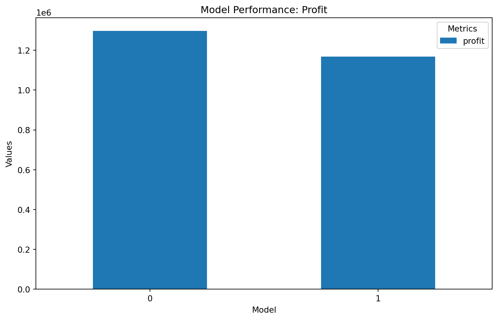
As we can see on the above graph, predicted model have higher profit than the spam model.
# Set 'model' as the index for better plotting
#mod_perf.set_index("model", inplace=True)
# Plotting both 'profit' and 'ROME'
mod_perf_rome.plot(kind="bar", figsize=(10, 6))
# Customizing plot
plt.title("Model Performance: ROME")
plt.xlabel("Model")
plt.ylabel("Values")
plt.legend(title="Metrics")
plt.xticks(rotation=0) # Keep model labels readable
# Show the plot
plt.show()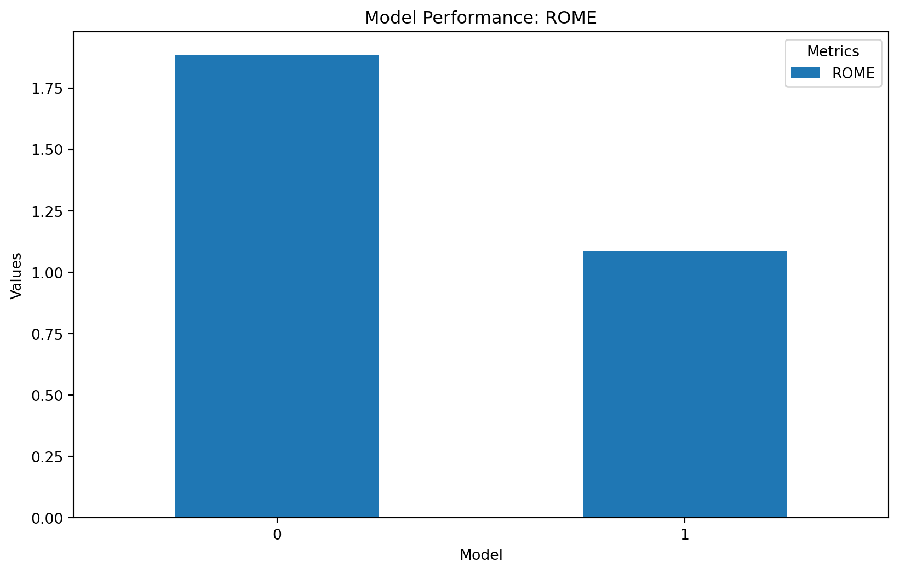
As we can see on the above graph, predicted model have higher rome than the spam model.
Question 4 - 50% drop off in response from wave-1 to wave-2
# Randomly drop 50% of values from "drop_pred_logit"
np.random.seed(42) # For reproducibility
intuit75k_test.loc[
np.random.choice(intuit75k_test.index, size=len(intuit75k_test) // 2, replace=False),
"drop_pred_logit"
] = np.nan/tmp/ipykernel_16300/1905171041.py:3: SettingWithCopyWarning:
A value is trying to be set on a copy of a slice from a DataFrame.
Try using .loc[row_indexer,col_indexer] = value instead
See the caveats in the documentation: https://pandas.pydata.org/pandas-docs/stable/user_guide/indexing.html#returning-a-view-versus-a-copy
intuit75k_test.loc[intuit75k_test| id | zip5 | zip_bins | sex | bizflag | numords | dollars | last | sincepurch | version1 | owntaxprod | upgraded | res1 | training | res1_yes | pred_logit | message_logit | drop_pred_logit | |
|---|---|---|---|---|---|---|---|---|---|---|---|---|---|---|---|---|---|---|
| 1 | 2 | 53190 | 10 | Unknown | 0 | 1 | 69.5 | 4 | 3 | 0 | 0 | 0 | No | 0 | 0 | 0.023960 | True | NaN |
| 2 | 3 | 37091 | 8 | Male | 0 | 4 | 93.0 | 14 | 29 | 0 | 0 | 1 | No | 0 | 0 | 0.097769 | True | NaN |
| 4 | 5 | 60201 | 11 | Male | 0 | 1 | 24.5 | 2 | 3 | 0 | 0 | 0 | No | 0 | 0 | 0.027635 | True | NaN |
| 6 | 7 | 22980 | 5 | Male | 0 | 1 | 49.5 | 13 | 36 | 1 | 0 | 0 | No | 0 | 0 | 0.034151 | True | NaN |
| 8 | 9 | 34950 | 8 | Male | 0 | 1 | 44.5 | 15 | 4 | 0 | 0 | 0 | No | 0 | 0 | 0.016013 | False | NaN |
| ... | ... | ... | ... | ... | ... | ... | ... | ... | ... | ... | ... | ... | ... | ... | ... | ... | ... | ... |
| 74981 | 74982 | 90803 | 16 | Male | 1 | 1 | 129.5 | 12 | 16 | 0 | 0 | 0 | No | 0 | 0 | 0.018676 | False | NaN |
| 74982 | 74983 | 71446 | 12 | Male | 0 | 2 | 22.0 | 25 | 1 | 0 | 0 | 0 | No | 0 | 0 | 0.017766 | False | NaN |
| 74987 | 74988 | 80501 | 15 | Female | 0 | 4 | 94.5 | 7 | 23 | 1 | 0 | 0 | No | 0 | 0 | 0.094453 | True | NaN |
| 74993 | 74994 | 40223 | 8 | Female | 0 | 5 | 170.5 | 9 | 20 | 0 | 0 | 1 | Yes | 0 | 1 | 0.148813 | True | NaN |
| 74999 | 75000 | 32791 | 7 | Male | 0 | 1 | 74.5 | 7 | 28 | 0 | 0 | 1 | No | 0 | 0 | 0.056582 | True | NaN |
22500 rows × 18 columns
intuit75k_test["drop_message_logit"] = intuit75k_test["drop_pred_logit"] > breakeven /tmp/ipykernel_16300/5424778.py:1: SettingWithCopyWarning:
A value is trying to be set on a copy of a slice from a DataFrame.
Try using .loc[row_indexer,col_indexer] = value instead
See the caveats in the documentation: https://pandas.pydata.org/pandas-docs/stable/user_guide/indexing.html#returning-a-view-versus-a-copy
intuit75k_test["drop_message_logit"] = intuit75k_test["drop_pred_logit"] > breakevenTrue_Positive = ((intuit75k_test["res1"] == "Yes") & (intuit75k_test["drop_message_logit"] == True)).sum()
False_Positive = ((intuit75k_test["res1"] == "No") & (intuit75k_test["drop_message_logit"] == True)).sum()
True_Negative = ((intuit75k_test["res1"] == "No") & (intuit75k_test["drop_message_logit"] == False)).sum()
False_Negative = ((intuit75k_test["res1"] == "Yes") & (intuit75k_test["drop_message_logit"] == False)).sum()
cm_logit = pd.DataFrame(
{
"label": ["True_Positive", "False_Positive", "True_Negative", "False_Negative"],
"nr": [True_Positive, False_Positive, True_Negative, False_Negative] # TP, FP, TN, and FN values in that order
}
)
cm_logit| label | nr | |
|---|---|---|
| 0 | True_Positive | 0 |
| 1 | False_Positive | 0 |
| 2 | True_Negative | 21397 |
| 3 | False_Negative | 1103 |
# logit
exp_click_log = 763334 * (460/22500)
exp_rev_log = exp_click_log * 60
marketing_cost_log = ((763334 * (460/22500)) + (763334 * (6752/22500))) * 1.41
profit_log = exp_rev_log - marketing_cost_log
ROME_log = profit_log / marketing_cost_log
print(exp_click_log)
print(exp_rev_log)
print(marketing_cost_log)
print(f"Profit: {profit_log}")
print(f"ROME: {ROME_log}")15605.939555555557
936356.3733333334
344990.327968
Profit: 591366.0453653333
ROME: 1.7141525353724878We can see that dropping the response rate to 50% will result in a loss of profit.
Assumptions + interpretation of variables
Zip_bins : Certain zip bins (e.g., Bin 1, Bin 12, Bin 18) have higher response rates. Zip bins may indicate regional factors that influence purchasing behavior like cities may be more likely to upgrade than small towns. This suggests that zip_bins is a strong predictive feature and should be included in the model.
Numords: More past orders indicate a higher likelihood of responding. This may be due to higher engagement and more engagement may mean more likely to be a repeat customer.
Sex: Gender is split about 60 / 30 / 10 for male / female / unknown respectively. Hinting that gender is a variable to account for. Historically there has been a larger pool of software customers that are male as opposed to other gender, aligning with our preliminary results. If male/female business owners behave differently, this might be a significant interaction with bizflag.
Version1: Customers on version 1 may need an upgrade more than version 2 users as their software is more outdated. The version1 user may have a higher response rate than version 2 as it is older.
Owntaxprod: If the user has previously purchased the software, they are likely to purchase more in the future. Customers using tax products might be loyal to Intuit, leading to higher upgrade likelihood.
Sincepurch: This variable represents the time since the customer originally purchased Quickbooks. This is a key predictor of response likelihood because it reflects customer lifecycle and engagement Customers who purchased a long time ago may be due for an upgrade.Older customers may either be loyal users or satisfied non-upgraders.
Upgraded: Customers who have upgraded their software before are more likely to do so again. They might be willing to upgrade to a newer version as they are familiar with the software and may be loyal to it
Last: Customers who have purchased recently or at a regular cadence are more likely to purchase again than those who have not purchased in a while. We saw this trend with our previous case studies and thus expect it to hold true here as well (at least until disproved).
We change the integer variables (version1, owntaxprod, upgraded) that had values of 0 and 1 to factors as those variables are not continuous. It does not make sense to have it be integers
Model 1
intuit75k_model_v6 = rsm.model.logistic(
data=intuit75k.query("training == 1"),
rvar="res1",
lev="Yes",
evar=["numords", "version1", "upgraded", "last", "zip_bins", "owntaxprod", "dollars", 'sincepurch'],
# ivar = ["last: zip_bins"],
)
intuit75k_model_v6.summary(vif = True,)Logistic regression (GLM)
Data : Not provided
Response variable : res1
Level : Yes
Explanatory variables: numords, version1, upgraded, last, zip_bins, owntaxprod, dollars, sincepurch
Null hyp.: There is no effect of x on res1
Alt. hyp.: There is an effect of x on res1
OR OR% coefficient std.error z.value p.value
Intercept 0.178 -82.2% -1.72 0.082 -20.992 < .001 ***
version1[1] 2.112 111.2% 0.75 0.087 8.580 < .001 ***
upgraded[1] 2.615 161.5% 0.96 0.086 11.198 < .001 ***
zip_bins[2] 0.148 -85.2% -1.91 0.110 -17.299 < .001 ***
zip_bins[3] 0.118 -88.2% -2.14 0.121 -17.708 < .001 ***
zip_bins[4] 0.136 -86.4% -2.00 0.112 -17.806 < .001 ***
zip_bins[5] 0.116 -88.4% -2.15 0.120 -17.893 < .001 ***
zip_bins[6] 0.126 -87.4% -2.07 0.115 -18.044 < .001 ***
zip_bins[7] 0.121 -87.9% -2.11 0.117 -17.976 < .001 ***
zip_bins[8] 0.131 -86.9% -2.03 0.114 -17.845 < .001 ***
zip_bins[9] 0.124 -87.6% -2.09 0.117 -17.860 < .001 ***
zip_bins[10] 0.121 -87.9% -2.11 0.118 -17.917 < .001 ***
zip_bins[11] 0.128 -87.2% -2.05 0.116 -17.643 < .001 ***
zip_bins[12] 0.172 -82.8% -1.76 0.104 -16.867 < .001 ***
zip_bins[13] 0.113 -88.7% -2.18 0.121 -17.940 < .001 ***
zip_bins[14] 0.131 -86.9% -2.03 0.115 -17.722 < .001 ***
zip_bins[15] 0.118 -88.2% -2.14 0.119 -17.897 < .001 ***
zip_bins[16] 0.130 -87.0% -2.04 0.114 -17.892 < .001 ***
zip_bins[17] 0.130 -87.0% -2.04 0.114 -17.849 < .001 ***
zip_bins[18] 0.183 -81.7% -1.70 0.101 -16.742 < .001 ***
zip_bins[19] 0.143 -85.7% -1.95 0.111 -17.503 < .001 ***
zip_bins[20] 0.124 -87.6% -2.08 0.116 -17.975 < .001 ***
owntaxprod[1] 1.357 35.7% 0.31 0.103 2.969 0.003 **
numords 1.258 25.8% 0.23 0.019 12.041 < .001 ***
last 0.957 -4.3% -0.04 0.002 -18.073 < .001 ***
dollars 1.001 0.1% 0.00 0.000 4.017 < .001 ***
sincepurch 1.002 0.2% 0.00 0.004 0.471 0.638
Signif. codes: 0 '***' 0.001 '**' 0.01 '*' 0.05 '.' 0.1 ' ' 1
Pseudo R-squared (McFadden): 0.114
Pseudo R-squared (McFadden adjusted): 0.111
Area under the RO Curve (AUC): 0.755
Log-likelihood: -8900.357, AIC: 17854.714, BIC: 18094.166
Chi-squared: 2288.93, df(26), p.value < 0.001
Nr obs: 52,500
Variance inflation factors:
vif Rsq
sincepurch 3.737 0.732
version1 2.972 0.664
upgraded 2.919 0.657
numords 1.558 0.358
dollars 1.527 0.345
owntaxprod 1.027 0.026
last 1.018 0.017
zip_bins 1.002 0.002intuit75k["pred_logit"] = intuit75k_model_v6.predict(data=intuit75k)["prediction"]
intuit75k| id | zip5 | zip_bins | sex | bizflag | numords | dollars | last | sincepurch | version1 | owntaxprod | upgraded | res1 | training | res1_yes | pred_logit | message_logit | |
|---|---|---|---|---|---|---|---|---|---|---|---|---|---|---|---|---|---|
| 0 | 1 | 94553 | 18 | Male | 0 | 2 | 109.5 | 5 | 12 | 0 | 0 | 0 | No | 1 | 0 | 0.045754 | True |
| 1 | 2 | 53190 | 10 | Unknown | 0 | 1 | 69.5 | 4 | 3 | 0 | 0 | 0 | No | 0 | 0 | 0.024226 | True |
| 2 | 3 | 37091 | 8 | Male | 0 | 4 | 93.0 | 14 | 29 | 0 | 0 | 1 | No | 0 | 0 | 0.088417 | True |
| 3 | 4 | 02125 | 1 | Male | 0 | 1 | 22.0 | 17 | 1 | 0 | 0 | 0 | No | 1 | 0 | 0.098746 | True |
| 4 | 5 | 60201 | 11 | Male | 0 | 1 | 24.5 | 2 | 3 | 0 | 0 | 0 | No | 0 | 0 | 0.026569 | True |
| ... | ... | ... | ... | ... | ... | ... | ... | ... | ... | ... | ... | ... | ... | ... | ... | ... | ... |
| 74995 | 74996 | 28205 | 6 | Male | 1 | 4 | 211.5 | 5 | 15 | 0 | 0 | 0 | Yes | 1 | 1 | 0.055721 | True |
| 74996 | 74997 | 94806 | 18 | Male | 0 | 1 | 4.5 | 35 | 34 | 1 | 0 | 0 | No | 1 | 0 | 0.019716 | False |
| 74997 | 74998 | 72958 | 13 | Female | 1 | 1 | 54.5 | 4 | 19 | 1 | 0 | 0 | No | 1 | 0 | 0.047320 | True |
| 74998 | 74999 | 29464 | 6 | Male | 0 | 1 | 69.5 | 20 | 27 | 0 | 0 | 1 | No | 1 | 0 | 0.033969 | True |
| 74999 | 75000 | 32791 | 7 | Male | 0 | 1 | 74.5 | 7 | 28 | 0 | 0 | 1 | No | 0 | 0 | 0.056557 | True |
75000 rows × 17 columns
cost = 1.41
margin = 60.0
breakeven = cost / margin
breakeven0.0235intuit75k["message_logit"] = intuit75k['pred_logit'] > breakevenintuit75k.message_logit.value_counts()message_logit
True 47490
False 27510
Name: count, dtype: int64intuit75k_test = intuit75k[(intuit75k.training == 0)]
intuit75k_test| id | zip5 | zip_bins | sex | bizflag | numords | dollars | last | sincepurch | version1 | owntaxprod | upgraded | res1 | training | res1_yes | pred_logit | message_logit | |
|---|---|---|---|---|---|---|---|---|---|---|---|---|---|---|---|---|---|
| 1 | 2 | 53190 | 10 | Unknown | 0 | 1 | 69.5 | 4 | 3 | 0 | 0 | 0 | No | 0 | 0 | 0.024226 | True |
| 2 | 3 | 37091 | 8 | Male | 0 | 4 | 93.0 | 14 | 29 | 0 | 0 | 1 | No | 0 | 0 | 0.088417 | True |
| 4 | 5 | 60201 | 11 | Male | 0 | 1 | 24.5 | 2 | 3 | 0 | 0 | 0 | No | 0 | 0 | 0.026569 | True |
| 6 | 7 | 22980 | 5 | Male | 0 | 1 | 49.5 | 13 | 36 | 1 | 0 | 0 | No | 0 | 0 | 0.034082 | True |
| 8 | 9 | 34950 | 8 | Male | 0 | 1 | 44.5 | 15 | 4 | 0 | 0 | 0 | No | 0 | 0 | 0.015861 | False |
| ... | ... | ... | ... | ... | ... | ... | ... | ... | ... | ... | ... | ... | ... | ... | ... | ... | ... |
| 74981 | 74982 | 90803 | 16 | Male | 1 | 1 | 129.5 | 12 | 16 | 0 | 0 | 0 | No | 0 | 0 | 0.020083 | False |
| 74982 | 74983 | 71446 | 12 | Male | 0 | 2 | 22.0 | 25 | 1 | 0 | 0 | 0 | No | 0 | 0 | 0.016403 | False |
| 74987 | 74988 | 80501 | 15 | Female | 0 | 4 | 94.5 | 7 | 23 | 1 | 0 | 0 | No | 0 | 0 | 0.086971 | True |
| 74993 | 74994 | 40223 | 8 | Female | 0 | 5 | 170.5 | 9 | 20 | 0 | 0 | 1 | Yes | 0 | 1 | 0.139861 | True |
| 74999 | 75000 | 32791 | 7 | Male | 0 | 1 | 74.5 | 7 | 28 | 0 | 0 | 1 | No | 0 | 0 | 0.056557 | True |
22500 rows × 17 columns
True_Positive = ((intuit75k_test["res1"] == "Yes") & (intuit75k_test["message_logit"] == True)).sum()
False_Positive = ((intuit75k_test["res1"] == "No") & (intuit75k_test["message_logit"] == True)).sum()
True_Negative = ((intuit75k_test["res1"] == "No") & (intuit75k_test["message_logit"] == False)).sum()
False_Negative = ((intuit75k_test["res1"] == "Yes") & (intuit75k_test["message_logit"] == False)).sum()cm_logit = pd.DataFrame(
{
"label": ["True_Positive", "False_Positive", "True_Negative", "False_Negative"],
"nr": [True_Positive, False_Positive, True_Negative, False_Negative] # TP, FP, TN, and FN values in that order
}
)
cm_logit| label | nr | |
|---|---|---|
| 0 | True_Positive | 980 |
| 1 | False_Positive | 13335 |
| 2 | True_Negative | 8062 |
| 3 | False_Negative | 123 |
accuracy_logit = (True_Positive + True_Negative) / (True_Positive + True_Negative + False_Positive + False_Negative) # float
print(accuracy_logit)0.40186666666666665Model 2
intuit75k_model_v7 = rsm.model.logistic(
data=intuit75k.query("training == 1"),
rvar="res1",
lev="Yes",
evar=["numords", "version1", "upgraded", "last", "zip_bins", "owntaxprod", "sex", "dollars", 'sincepurch'],
)
intuit75k_model_v7.summary(vif = True,)Logistic regression (GLM)
Data : Not provided
Response variable : res1
Level : Yes
Explanatory variables: numords, version1, upgraded, last, zip_bins, owntaxprod, sex, dollars, sincepurch
Null hyp.: There is no effect of x on res1
Alt. hyp.: There is an effect of x on res1
OR OR% coefficient std.error z.value p.value
Intercept 0.182 -81.8% -1.70 0.092 -18.574 < .001 ***
version1[1] 2.111 111.1% 0.75 0.087 8.578 < .001 ***
upgraded[1] 2.616 161.6% 0.96 0.086 11.199 < .001 ***
zip_bins[2] 0.148 -85.2% -1.91 0.110 -17.299 < .001 ***
zip_bins[3] 0.117 -88.3% -2.14 0.121 -17.713 < .001 ***
zip_bins[4] 0.136 -86.4% -2.00 0.112 -17.809 < .001 ***
zip_bins[5] 0.116 -88.4% -2.15 0.120 -17.896 < .001 ***
zip_bins[6] 0.126 -87.4% -2.07 0.115 -18.047 < .001 ***
zip_bins[7] 0.121 -87.9% -2.11 0.117 -17.980 < .001 ***
zip_bins[8] 0.131 -86.9% -2.03 0.114 -17.848 < .001 ***
zip_bins[9] 0.124 -87.6% -2.09 0.117 -17.863 < .001 ***
zip_bins[10] 0.121 -87.9% -2.11 0.118 -17.921 < .001 ***
zip_bins[11] 0.128 -87.2% -2.05 0.116 -17.646 < .001 ***
zip_bins[12] 0.172 -82.8% -1.76 0.104 -16.870 < .001 ***
zip_bins[13] 0.113 -88.7% -2.18 0.121 -17.942 < .001 ***
zip_bins[14] 0.131 -86.9% -2.03 0.115 -17.721 < .001 ***
zip_bins[15] 0.118 -88.2% -2.14 0.119 -17.896 < .001 ***
zip_bins[16] 0.130 -87.0% -2.04 0.114 -17.897 < .001 ***
zip_bins[17] 0.130 -87.0% -2.04 0.114 -17.851 < .001 ***
zip_bins[18] 0.183 -81.7% -1.70 0.101 -16.745 < .001 ***
zip_bins[19] 0.143 -85.7% -1.95 0.111 -17.504 < .001 ***
zip_bins[20] 0.124 -87.6% -2.08 0.116 -17.977 < .001 ***
owntaxprod[1] 1.357 35.7% 0.31 0.103 2.968 0.003 **
sex[Male] 0.975 -2.5% -0.02 0.053 -0.467 0.64
sex[Unknown] 0.964 -3.6% -0.04 0.076 -0.482 0.63
numords 1.258 25.8% 0.23 0.019 12.043 < .001 ***
last 0.957 -4.3% -0.04 0.002 -18.064 < .001 ***
dollars 1.001 0.1% 0.00 0.000 4.015 < .001 ***
sincepurch 1.002 0.2% 0.00 0.004 0.471 0.637
Signif. codes: 0 '***' 0.001 '**' 0.01 '*' 0.05 '.' 0.1 ' ' 1
Pseudo R-squared (McFadden): 0.114
Pseudo R-squared (McFadden adjusted): 0.111
Area under the RO Curve (AUC): 0.755
Log-likelihood: -8900.21, AIC: 17858.421, BIC: 18115.609
Chi-squared: 2289.223, df(28), p.value < 0.001
Nr obs: 52,500
Variance inflation factors:
vif Rsq
sincepurch 3.737 0.732
version1 2.972 0.664
upgraded 2.919 0.657
numords 1.558 0.358
dollars 1.527 0.345
owntaxprod 1.027 0.026
last 1.018 0.017
zip_bins 1.003 0.003
sex 1.001 0.001intuit75k["pred_logit_2"] = intuit75k_model_v7.predict(data=intuit75k)["prediction"]
intuit75k| id | zip5 | zip_bins | sex | bizflag | numords | dollars | last | sincepurch | version1 | owntaxprod | upgraded | res1 | training | res1_yes | pred_logit | message_logit | pred_logit_2 | |
|---|---|---|---|---|---|---|---|---|---|---|---|---|---|---|---|---|---|---|
| 0 | 1 | 94553 | 18 | Male | 0 | 2 | 109.5 | 5 | 12 | 0 | 0 | 0 | No | 1 | 0 | 0.045754 | True | 0.045583 |
| 1 | 2 | 53190 | 10 | Unknown | 0 | 1 | 69.5 | 4 | 3 | 0 | 0 | 0 | No | 0 | 0 | 0.024226 | True | 0.023849 |
| 2 | 3 | 37091 | 8 | Male | 0 | 4 | 93.0 | 14 | 29 | 0 | 0 | 1 | No | 0 | 0 | 0.088417 | True | 0.088133 |
| 3 | 4 | 02125 | 1 | Male | 0 | 1 | 22.0 | 17 | 1 | 0 | 0 | 0 | No | 1 | 0 | 0.098746 | True | 0.098437 |
| 4 | 5 | 60201 | 11 | Male | 0 | 1 | 24.5 | 2 | 3 | 0 | 0 | 0 | No | 0 | 0 | 0.026569 | True | 0.026462 |
| ... | ... | ... | ... | ... | ... | ... | ... | ... | ... | ... | ... | ... | ... | ... | ... | ... | ... | ... |
| 74995 | 74996 | 28205 | 6 | Male | 1 | 4 | 211.5 | 5 | 15 | 0 | 0 | 0 | Yes | 1 | 1 | 0.055721 | True | 0.055514 |
| 74996 | 74997 | 94806 | 18 | Male | 0 | 1 | 4.5 | 35 | 34 | 1 | 0 | 0 | No | 1 | 0 | 0.019716 | False | 0.019648 |
| 74997 | 74998 | 72958 | 13 | Female | 1 | 1 | 54.5 | 4 | 19 | 1 | 0 | 0 | No | 1 | 0 | 0.047320 | True | 0.048264 |
| 74998 | 74999 | 29464 | 6 | Male | 0 | 1 | 69.5 | 20 | 27 | 0 | 0 | 1 | No | 1 | 0 | 0.033969 | True | 0.033849 |
| 74999 | 75000 | 32791 | 7 | Male | 0 | 1 | 74.5 | 7 | 28 | 0 | 0 | 1 | No | 0 | 0 | 0.056557 | True | 0.056345 |
75000 rows × 18 columns
intuit75k["message_logit_2"] = intuit75k['pred_logit_2'] > breakevenintuit75k.message_logit_2.value_counts()message_logit_2
True 47501
False 27499
Name: count, dtype: int64intuit75k_test_2 = intuit75k[(intuit75k.training == 0)]
intuit75k_test_2| id | zip5 | zip_bins | sex | bizflag | numords | dollars | last | sincepurch | version1 | owntaxprod | upgraded | res1 | training | res1_yes | pred_logit | message_logit | pred_logit_2 | message_logit_2 | |
|---|---|---|---|---|---|---|---|---|---|---|---|---|---|---|---|---|---|---|---|
| 1 | 2 | 53190 | 10 | Unknown | 0 | 1 | 69.5 | 4 | 3 | 0 | 0 | 0 | No | 0 | 0 | 0.024226 | True | 0.023849 | True |
| 2 | 3 | 37091 | 8 | Male | 0 | 4 | 93.0 | 14 | 29 | 0 | 0 | 1 | No | 0 | 0 | 0.088417 | True | 0.088133 | True |
| 4 | 5 | 60201 | 11 | Male | 0 | 1 | 24.5 | 2 | 3 | 0 | 0 | 0 | No | 0 | 0 | 0.026569 | True | 0.026462 | True |
| 6 | 7 | 22980 | 5 | Male | 0 | 1 | 49.5 | 13 | 36 | 1 | 0 | 0 | No | 0 | 0 | 0.034082 | True | 0.033949 | True |
| 8 | 9 | 34950 | 8 | Male | 0 | 1 | 44.5 | 15 | 4 | 0 | 0 | 0 | No | 0 | 0 | 0.015861 | False | 0.015800 | False |
| ... | ... | ... | ... | ... | ... | ... | ... | ... | ... | ... | ... | ... | ... | ... | ... | ... | ... | ... | ... |
| 74981 | 74982 | 90803 | 16 | Male | 1 | 1 | 129.5 | 12 | 16 | 0 | 0 | 0 | No | 0 | 0 | 0.020083 | False | 0.019999 | False |
| 74982 | 74983 | 71446 | 12 | Male | 0 | 2 | 22.0 | 25 | 1 | 0 | 0 | 0 | No | 0 | 0 | 0.016403 | False | 0.016343 | False |
| 74987 | 74988 | 80501 | 15 | Female | 0 | 4 | 94.5 | 7 | 23 | 1 | 0 | 0 | No | 0 | 0 | 0.086971 | True | 0.088678 | True |
| 74993 | 74994 | 40223 | 8 | Female | 0 | 5 | 170.5 | 9 | 20 | 0 | 0 | 1 | Yes | 0 | 1 | 0.139861 | True | 0.142432 | True |
| 74999 | 75000 | 32791 | 7 | Male | 0 | 1 | 74.5 | 7 | 28 | 0 | 0 | 1 | No | 0 | 0 | 0.056557 | True | 0.056345 | True |
22500 rows × 19 columns
True_Positive = ((intuit75k_test_2["res1"] == "Yes") & (intuit75k_test_2["message_logit_2"] == True)).sum()
False_Positive = ((intuit75k_test_2["res1"] == "No") & (intuit75k_test_2["message_logit_2"] == True)).sum()
True_Negative = ((intuit75k_test_2["res1"] == "No") & (intuit75k_test_2["message_logit_2"] == False)).sum()
False_Negative = ((intuit75k_test_2["res1"] == "Yes") & (intuit75k_test_2["message_logit_2"] == False)).sum()cm_logit = pd.DataFrame(
{
"label": ["True_Positive", "False_Positive", "True_Negative", "False_Negative"],
"nr": [True_Positive, False_Positive, True_Negative, False_Negative] # TP, FP, TN, and FN values in that order
}
)
cm_logit| label | nr | |
|---|---|---|
| 0 | True_Positive | 980 |
| 1 | False_Positive | 13326 |
| 2 | True_Negative | 8071 |
| 3 | False_Negative | 123 |
accuracy_logit = (True_Positive + True_Negative) / (True_Positive + True_Negative + False_Positive + False_Negative) # float
print(accuracy_logit)0.40226666666666666Model 3
After trying a few different ways - we felt that the final model is still better. We noticed that the accuracy did not change much between model 1 and 2.
Explicit Answers to Question + Conclusion
Businesses with More Orders (numords) Are More Likely to Upgrade
More Recent Buyers (last) Are More Likely to Upgrade
Businesses in Certain Locations (zip_bins) Upgrade More - Zip_bins 1, 12, 18
Older Version Users (version1) Are More Likely to Upgrade
Businesses That Have Upgraded Before (upgraded) Are More Likely to Upgrade Again